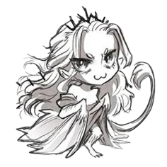

Slay the kURuc
GYIK
Gyakori kérdések
- Singleplayer: Játékos 1 WASD + Q, Játékos 2 Nyilak + M.
- Host + Join módban minden kliens a saját karakterét WASD + Q-val irányítja.
- Powerupok: nagy robbanás, gyorsító, fúró, pajzs, árnyék, MEGA + plusz élet.
- LAN módban látószög aktív: csak egy 6x6-os terület látszik a karakter körül.
- A veszélyzóna 20 másodperc után indul.